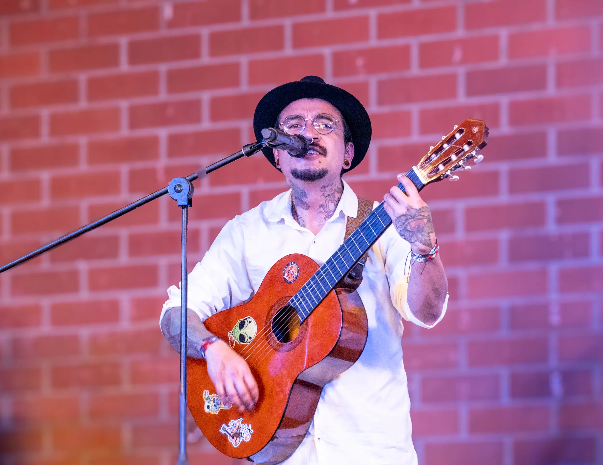
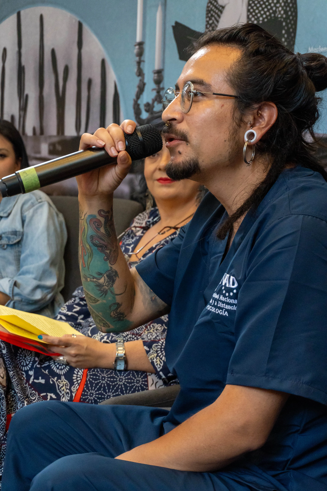

Reseña cronológica de reconocimientos y obras publicadas
- Ganador de la Convocatoria Somos Cultura Gobernación de Boyacá, 2020
- Ganador del registro Mapa sonoro Colombia Me Suena, periódico El Colombiano de Medellín, 2020
- Publicación en la Revista Carta Ecológica de Colombia, poemas Trilogía a la Madre Tierra, 2020
- Publicación en el libro de poesía Florilegio, Red Editorial, Popayán, Cauca 2020
- Ganador de la segunda Convocatoria de Estímulos a la Cultura Sogamoso, 2020
- Publicación del ensayo Real pandemia en el Fanzine Memorias en pandemia, Escritos, Fotografías e Ilustraciones de Autores Colombianos, 2020
- Artista invitado en el IV Encuentro Nacional de Escritores, Colombia, 2021
- Músico invitado en el Festival Internacional de la Cultura, Boyacá, 2022
- Músico Invitado al Espacio Cultural, Parque ARVI, Santa Elena, 2024
- Músico invitado al Festival Cultural Demostrarte, Santa Elena, 2024
- Músico invitado al festival Raíces Fest, COMFAMA, Río Negro, 2024
- Músico invitado Saludando a Oriente, Radio Chakaruna, El Carmen de Vivoral, 2024
- Músico invitado en el Festival de las Artes de Santa Elena, Medellín, 2025
- Artista invitado al Espacio cultural Entrevista con artistas del territorio, Biblioteca Pública, Santa Elena, 2025

